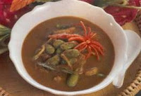

แกงหมูกับลูกเหรียง
เครื่องปรุง
เนื้อหมูหั่นบาง 1 กิโลกรัม
ลูกเหรียงเด็ดหางออก 500 กรัม
มะพร้าวขูด 1 กิโลกรัม
น้ำตาลปีบ 1 ช้อนชา
น้ำปลา 1 ช้อนชา
พริกขี้หนูสด 50 เม็ด
หอมแดงซอย 4 หัว
กระเทียม 1 หัว
ข่าหั่นละเอียด 5 แว่น
ตะไคร้หั่นฝอย 3-4 ต้น
ขมิ้นหั่นยาว 1 นิ้ว 1 ชิ้น
พริกไทยเม็ด 2 ช้อนชา
เกลือป่น 1 ช้อนชา
1. คั้นมะพร้าวให้ได้หัวกะทิ 1 ถ้วย และหางกะทิ 3 ถ้วย
2. ใส่หางกะทิลงใสหม้อ ตั้งไฟพอเดือด ใส่น้ำพริกแกงที่ โขลกคนให้ละลาย ใส่เนื้อหมู
3. ปรุงรสด้วยน้ำปลา น้ำตาล พอหมูสุก ใส่ลูกเหรียง หัว กะทิ ต้มต่อสักครู่ ปิดไฟ ยกลง
4. ตักใส่ชาม เสิร์ฟ